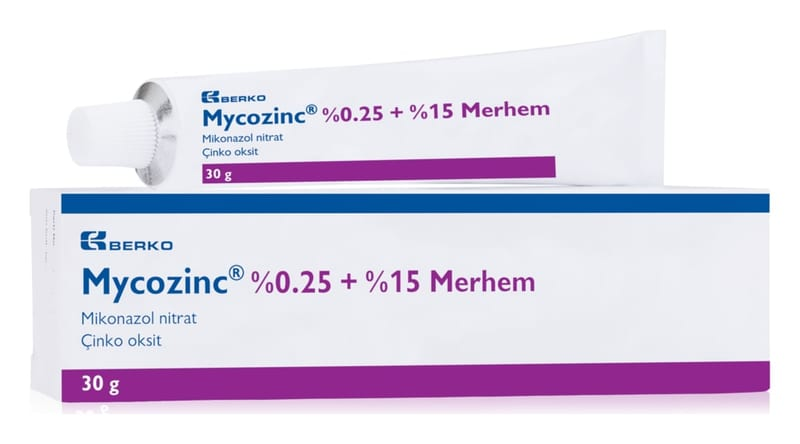

Mycozinc %0.25+%15 Merhemi, 50 g

Ne için kullanılır
KT · Bölüm 1• MYCOZİNC; 30 g’lık ve 50 g’lık alüminyum tüplerde pazarlanan, mikonazol nitrat ve çinko oksit içeren, haricen kullanılan bir merhemdir.
• MYCOZİNC’ in bileşimindeki mikonazol nitrat; bakteri ve mantarlara karşı etkili olan bir maddedir.
• MYCOZİNC 4 haftalıktan büyük ve normal bir bağışıklık sistemine sahip çocukların pişik ve ayrıca ona eşlik eden mantar enfeksiyonu tedavisinde kullanılır.